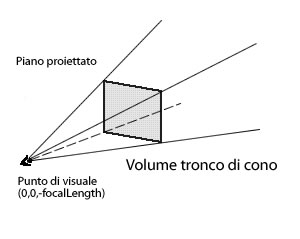

| Pacchetto | flash.geom |
| Classe | public class PerspectiveProjection |
| Ereditarietà | PerspectiveProjection |
| Versione linguaggio: | ActionScript 3.0 |
| Versioni runtime: | Flash Player 10, AIR 1.5 |
La proiezione è un modo di rappresentare un oggetto tridimensionale in uno spazio bidimensionale, come un cubo proiettato sullo schermo del computer. La proiezione prospettica utilizza un tronco di visualizzazione (una piramide rettangolare) per modellare e proiettare un ambiente tridimensionale e i relativi oggetti sullo schermo. Il tronco di visualizzazione diventa sempre più ampio mentre si sposta in avanti dall'origine del punto di vista. L'origine del punto di vista può essere una videocamera o gli occhi di un osservatore davanti allo schermo. La prospettiva proiettata produce l'illusione di una vista tridimensionale con profondità e distanza, dove gli oggetti più vicini allo schermo appaiono più grandi rispetto a quelli più lontani.

Un oggetto PerspectiveProjection predefinito è una struttura definita per la trasformazione prospettica dell'oggetto radice, in base al campo visivo e al rapporto proporzionale (dimensioni) dello stage. Il centro della proiezione, il punto di fuga, è impostato al centro dello stage; ciò significa che gli oggetti di visualizzazione tridimensionali scompaiono verso il centro dello stage durante il movimento all'indietro sull'asse z. Il punto di vista predefinito corrisponde al punto (0,0) rivolto verso l'asse z positivo. L'asse y punta verso la parte inferiore dello schermo. Potete accedere alle impostazioni di proiezione prospettica dell'oggetto di visualizzazione root e modificare le proprietà del campo visivo e del centro di proiezione della proprietà perspectiveProjection mediante la proprietà DisplayObject.transform dell'oggetto root.
Potete inoltre specificare un'impostazione di proiezione prospettica diversa per un oggetto di visualizzazione tramite la proiezione prospettica dell'oggetto principale. Per prima cosa, create un oggetto PerspectiveProjection e impostate le relative proprietà fieldOfView e projectionCenter. Quindi assegnate l'oggetto PerspectiveProjection all'oggetto di visualizzazione principale utilizzando la proprietà DisplayObject.transform. La matrice di proiezione e la trasformazione specificate vengono quindi applicate a tutti gli elementi secondari tridimensionali dell'oggetto di visualizzazione.
Altri esempi
Elementi API correlati
 Nascondi proprietà pubbliche ereditate
Nascondi proprietà pubbliche ereditate Mostra proprietà pubbliche ereditate
Mostra proprietà pubbliche ereditate| Proprietà | Definito da | ||
|---|---|---|---|
 | constructor : Object
Un riferimento all'oggetto classe o alla funzione di costruzione per una determinata istanza di oggetto. | Object | |
| fieldOfView : Number
Specifica un angolo, sotto forma di gradi tra 0 e 180, per il campo visivo in tre dimensioni. | PerspectiveProjection | ||
| focalLength : Number
La distanza tra l'occhio o l'origine del punto di vista (0,0,0) e l'oggetto di visualizzazione posizionato sull'asse z. | PerspectiveProjection | ||
| projectionCenter : Point
Un punto bidimensionale che rappresenta il centro della proiezione, il punto di fuga dell'oggetto di visualizzazione. | PerspectiveProjection | ||
| Metodo | Definito da | ||
|---|---|---|---|
Crea un'istanza di un oggetto PerspectiveProjection. | PerspectiveProjection | ||
|
Indica se per un oggetto è definita una proprietà specifica. | Object | |
|
Indica se un'istanza della classe Object si trova nella catena di prototipi dell'oggetto specificato come parametro. | Object | |
|
Indica se la proprietà specificata esiste ed è enumerabile. | Object | |
|
Imposta la disponibilità di una proprietà dinamica per le operazioni cicliche. | Object | |
|
Restituisce la rappresentazione in formato stringa di questo oggetto, formattato in base alle convenzioni specifiche per le versioni localizzate. | Object | |
Restituisce l'oggetto Matrix3D sottostante dell'oggetto di visualizzazione. | PerspectiveProjection | ||
|
Restituisce la rappresentazione in formato stringa dell'oggetto specificato. | Object | |
|
Restituisce il valore di base dell'oggetto specificato. | Object | |
fieldOfView | proprietà |
fieldOfView:Number| Versione linguaggio: | ActionScript 3.0 |
| Versioni runtime: | Flash Player 10, AIR 1.5 |
Specifica un angolo, sotto forma di gradi tra 0 e 180, per il campo visivo in tre dimensioni. Questo valore determina l'intensità con cui la trasformazione prospettica e la distorsione vengono applicate a un oggetto di visualizzazione tridimensionale con una coordinata z diversa da zero.
Un grado prossimo a 0 significa che le coordinate bidimensionali x e y dello schermo sono approssimativamente le stesse delle coordinate tridimensionali x, y e z con una distorsione minima o assente. In altre parole, per un angolo di piccole dimensioni, un oggetto di visualizzazione che si sposta lungo l'asse z rimane apparentemente delle stesse dimensioni e si sposta di poco.
Un valore prossimo a 180 gradi produce l'effetto di una lente grandangolare: le posizioni con un valore z minore di 0 vengono ingrandite, mentre le posizioni con un valore z maggiore di 0 vengono ridotte. Con un angolo di grandi dimensioni, un oggetto di visualizzazione che si sposta lungo l'asse z cambia apparentemente le dimensioni in modo rapido e si sposta di molto. Se il campo visivo è impostato su 0 o 180, sullo schermo non viene visualizzato alcun oggetto.
Implementazione
public function get fieldOfView():Number public function set fieldOfView(value:Number):voidfocalLength | proprietà |
focalLength:Number| Versione linguaggio: | ActionScript 3.0 |
| Versioni runtime: | Flash Player 10, AIR 1.5 |
La distanza tra l'occhio o l'origine del punto di vista (0,0,0) e l'oggetto di visualizzazione posizionato sull'asse z. Durante la trasformazione prospettica, focalLength viene calcolata in modo dinamico utilizzando l'angolo del campo visivo e il rapporto proporzionale dello stage (larghezza dello stage divisa per la sua altezza).
Implementazione
public function get focalLength():Number public function set focalLength(value:Number):voidElementi API correlati
projectionCenter | proprietà |
projectionCenter:Point| Versione linguaggio: | ActionScript 3.0 |
| Versioni runtime: | Flash Player 10, AIR 1.5 |
Un punto bidimensionale che rappresenta il centro della proiezione, il punto di fuga dell'oggetto di visualizzazione.
La proprietà projectionCenter rappresenta un offset al punto di registrazione predefinito che corrisponde alla parte superiore sinistra dello stage, punto (0,0). Il centro di trasformazione della proiezione predefinito è impostato al centro dello stage; ciò significa che gli oggetti di visualizzazione tridimensionali scompaiono verso il centro dello stage durante il movimento all'indietro sull'asse z.
Implementazione
public function get projectionCenter():Point public function set projectionCenter(value:Point):voidPerspectiveProjection | () | Funzione di costruzione |
public function PerspectiveProjection()| Versione linguaggio: | ActionScript 3.0 |
| Versioni runtime: | Flash Player 10, AIR 1.5 |
Crea un'istanza di un oggetto PerspectiveProjection.
toMatrix3D | () | metodo |
public function toMatrix3D():Matrix3D| Versione linguaggio: | ActionScript 3.0 |
| Versioni runtime: | Flash Player 10, AIR 1.5 |
Restituisce l'oggetto Matrix3D sottostante dell'oggetto di visualizzazione.
Un oggetto di visualizzazione, come l'oggetto radice, può avere un oggetto PerspectiveProjection senza richiedere la definizione di una proprietà Matrix3D per le relative trasformazioni. Potete infatti utilizzare un oggetto PerspectiveProjection o Matrix3D per specificare la trasformazione prospettica. Se quando utilizzate l'oggetto PerspectiveProjection è necessario un oggetto Matrix3D, potete utilizzare il metodo toMatrix3D() per recuperare l'oggetto Matrix3D sottostante dell'oggetto di visualizzazione. Il metodo toMatrix3D(), ad esempio, può essere utilizzato con il metodo Utils3D.projectVectors().
Matrix3D — L'oggetto Matrix3D sottostante.
|
Elementi API correlati
Tue Jun 12 2018, 02:44 PM Z